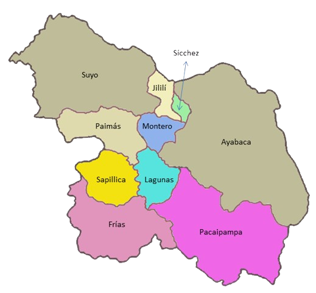

Montero al Descubierto: Un Viaje Fascinante a Través de su Origen y Significado
Sumérgete en la fascinante historia de Montero, conocido anteriormente como "San Antonio", establecido por ley N.º 8056 el 24 de marzo de 1935, durante el mandato del presidente Óscar R. Benavides. Manuel Merino Balarezo sirvió como su primer alcalde, iniciando un legado de prosperidad.
Descubre la Diversidad de los Centros Poblados de Montero: ¡Explora Nuestro Mosaico Cultural!
Montero cuenta con una riqueza incomparable de 21 centros poblados rurales, cada uno aportando su encanto único a la región. Desde paisajes pintorescos hasta tradiciones arraigadas, estos lugares ofrecen una experiencia auténtica de la vida rural en Montero
